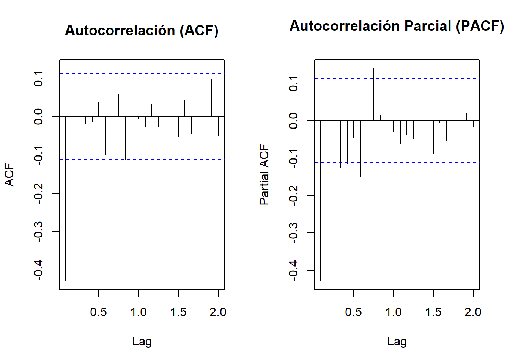
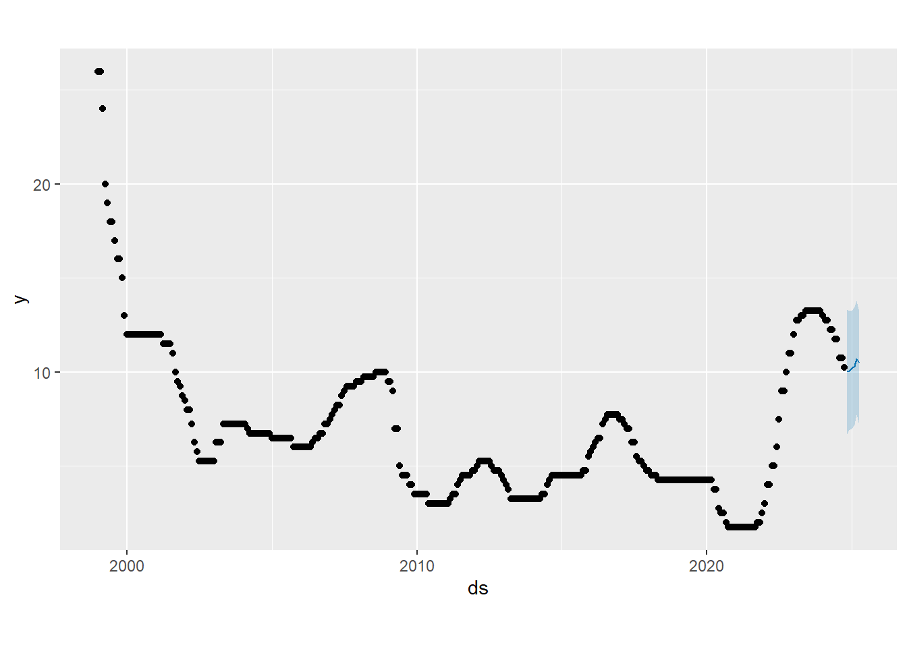
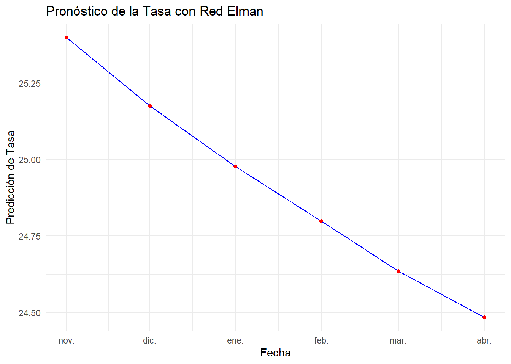

Capítulo: 2 Definición de Modelos
2.1 Modelo Arima
A continuación se probarán dos alternativas de modelo ARIMA, de acuerdo con los análisis realizados previamente, a fin de elegir aquel que se acomode mejor a la serie.
Alternativa 1 - c(1, 2, 3) (1, 1, 1):
Diferenciación no estacional (d): Dado que ya se aplicó una primera diferenciación en los datos y todavía no es completamente estacionaria, es posible considerar incrementar el parámetro de a 2.
Estacionalidad (seasonal): Como existe un patrón estacional claro en la serie, conviene incluir una diferenciación estacional (D = 1) y ajustar los parámetros P y Q para capturar las dependencias estacionales. Se probará el modelo con un seasonal = c(1, 1, 1) para incluir un término autoregresivo y uno de promedio móvil estacional.
Componentes AR y MA (p y q): Dado que p y q determinan la cantidad de términos autoregresivos y de promedio móvil, conviene probar con valores más altos para q y ajustar p de acuerdo con la correlación en los residuos. Esto puede ayudar a mejorar la precisión del modelo y su capacidad predictiva.
## Series: differenced_data
## ARIMA(1,2,3)(1,1,1)[12]
##
## Coefficients:
## ar1 ma1 ma2 ma3 sar1 sma1
## -0.9727 -0.7231 -0.9715 0.6948 -0.1013 -0.8826
## s.e. 0.0467 0.0637 0.0693 0.0509 0.0802 0.0548
##
## sigma^2 = 0.1596: log likelihood = -163.35
## AIC=340.7 AICc=341.1 BIC=366.46
##
## Training set error measures:
## ME RMSE MAE MPE MAPE MASE ACF1
## Training set -0.02662351 0.3862772 0.2369913 NaN Inf 0.6820726 -0.02211654
##
## Ljung-Box test
##
## data: Residuals from ARIMA(1,2,3)(1,1,1)[12]
## Q* = 24.811, df = 18, p-value = 0.1302
##
## Model df: 6. Total lags used: 24
Parámetros no estacionales
p = 1 (un término autoregresivo),
d = 2 (diferenciación de segundo orden para hacer estacionaria la serie en términos de tendencia),
q = 3 (tres términos de promedio móvil).
**parámetros estacionales*, donde:**
P = 1 (un término autoregresivo estacional),
D = 1 (diferenciación estacional),
Q = 1 (un término de promedio móvil estacional),
Los coeficientes y sus errores estándar sugieren que la mayoría de los términos son significativos (coeficientes altos en relación con sus errores estándar).
El test de Ljung-Box evalúa si los residuos del modelo son independientes (no correlacionados). Con un p-valor de 0.1302, se sugiere que los residuos no tienen autocorrelación significativa. Esto indica que el modelo está capturando bien la estructura de la serie.
Los resultados muestran que el modelo ARIMA(1,2,3)(1,1,1)[12] es probablemente adecuado para la serie.
El p-valor del test de Ljung-Box mayor a 0.05 indica que el modelo ha eliminado la mayoría de la autocorrelación en los residuos, lo cual es positivo.
Alternativa 1 - Análisis de Residuos

##
## Shapiro-Wilk normality test
##
## data: residuos_diff
## W = 0.82525, p-value < 2.2e-16Teniendo en cuenta la prueba de normalidad de Shapiro-Wilk, con un valor de 0.82525, siendo relativamente menor a 1, indica que los residuos no siguen una distribución normal.
En cuanto a p-value < 2.2e-16, al ser una cifra tan pequeña, se confirma que los residuos no son normales.
Por su parte, en la gráfica se evidencia un patrón en que los residuos tienen colas más gruesas que una distribución normal, lo cual reafirma la posible presencia de outliers o una distribución sesgada en los datos.
Alternativa 1 - Análisis de volatilidad utilizando Garch
##
## ***** ESTIMATION WITH ANALYTICAL GRADIENT *****
##
##
## I INITIAL X(I) D(I)
##
## 1 1.340879e-01 1.000e+00
## 2 5.000000e-02 1.000e+00
## 3 5.000000e-02 1.000e+00
##
## IT NF F RELDF PRELDF RELDX STPPAR D*STEP NPRELDF
## 0 1 -1.437e+02
## 1 3 -1.480e+02 2.86e-02 7.61e-02 3.8e-01 1.1e+03 1.0e-01 4.29e+01
## 2 4 -1.596e+02 7.30e-02 1.12e-01 2.6e-01 2.0e+00 1.0e-01 2.02e+02
## 3 6 -1.696e+02 5.86e-02 1.37e-01 3.5e-01 2.0e+00 2.7e-01 9.83e+01
## 4 7 -1.778e+02 4.64e-02 2.54e-01 2.4e-01 2.0e+00 2.7e-01 3.97e+00
## 5 9 -1.927e+02 7.71e-02 4.72e-02 2.0e-02 2.0e+00 2.7e-02 4.22e-01
## 6 11 -1.934e+02 3.51e-03 4.53e-03 2.3e-03 7.1e+00 2.7e-03 5.19e+00
## 7 12 -1.935e+02 6.17e-04 9.39e-04 1.8e-03 2.0e+00 2.7e-03 1.07e+00
## 8 16 -1.945e+02 5.36e-03 7.15e-03 5.6e-02 2.0e+00 7.2e-02 8.75e-01
## 9 17 -1.951e+02 2.97e-03 4.48e-03 5.9e-02 2.0e+00 7.2e-02 2.88e-01
## 10 18 -1.960e+02 4.50e-03 5.76e-03 5.5e-02 1.9e+00 7.2e-02 1.89e-01
## 11 19 -1.965e+02 2.57e-03 3.53e-03 5.2e-02 1.9e+00 7.2e-02 5.76e-02
## 12 21 -1.965e+02 3.32e-04 9.85e-04 2.3e-02 1.5e+00 3.3e-02 4.04e-03
## 13 22 -1.966e+02 1.11e-04 4.83e-04 2.0e-02 4.3e-02 3.3e-02 4.83e-04
## 14 23 -1.966e+02 1.72e-04 1.99e-04 1.0e-02 0.0e+00 1.4e-02 1.99e-04
## 15 24 -1.966e+02 4.62e-06 5.26e-05 7.2e-03 0.0e+00 9.6e-03 5.26e-05
## 16 25 -1.966e+02 1.45e-05 1.46e-05 3.2e-03 4.8e-01 4.8e-03 1.56e-05
## 17 26 -1.966e+02 1.82e-06 9.06e-07 9.2e-04 0.0e+00 1.3e-03 9.06e-07
## 18 36 -1.966e+02 -1.45e-15 1.41e-17 1.5e-14 2.9e+07 2.0e-14 1.21e-09
##
## ***** FALSE CONVERGENCE *****
##
## FUNCTION -1.966092e+02 RELDX 1.527e-14
## FUNC. EVALS 36 GRAD. EVALS 18
## PRELDF 1.409e-17 NPRELDF 1.212e-09
##
## I FINAL X(I) D(I) G(I)
##
## 1 1.304269e-02 1.000e+00 1.376e-01
## 2 3.225588e-01 1.000e+00 -8.836e-03
## 3 6.542356e-01 1.000e+00 -8.460e-03##
## Call:
## garch(x = residuos_diff, order = c(1, 1))
##
## Model:
## GARCH(1,1)
##
## Residuals:
## Min 1Q Median 3Q Max
## -4.7470 -0.5934 -0.1147 0.3248 5.6322
##
## Coefficient(s):
## Estimate Std. Error t value Pr(>|t|)
## a0 0.013043 0.001689 7.721 1.15e-14 ***
## a1 0.322559 0.056827 5.676 1.38e-08 ***
## b1 0.654236 0.038567 16.964 < 2e-16 ***
## ---
## Signif. codes: 0 '***' 0.001 '**' 0.01 '*' 0.05 '.' 0.1 ' ' 1
##
## Diagnostic Tests:
## Jarque Bera Test
##
## data: Residuals
## X-squared = 650.13, df = 2, p-value < 2.2e-16
##
##
## Box-Ljung test
##
## data: Squared.Residuals
## X-squared = 0.024148, df = 1, p-value = 0.8765El modelo GARCH(1,1) parece ser adecuado para modelar la volatilidad de residuos_diff, ya que los coeficientes son significativos y el test de Box-Ljung no muestra autocorrelación en los residuos al cuadrado.
La alta significancia de los coeficientes ARCH (a1) y GARCH (b1) indica que tanto los residuos recientes como la volatilidad pasada influyen en la volatilidad actual.
La prueba de Jarque-Bera sugiere que los residuos no siguen una distribución normal, lo cual puede indicar la presencia de colas pesadas o asimetría, características típicas en series financieras.
Este modelo GARCH(1,1) es útil para capturar los cambios en la volatilidad de la serie residuos_diff. La ausencia de autocorrelación en los residuos al cuadrado también sugiere que el modelo ha capturado adecuadamente la heterocedasticidad de la serie.
Auto Arima para identificar la Alternativa 2
## Series: differenced_data
## ARIMA(1,1,2)
##
## Coefficients:
## ar1 ma1 ma2
## -0.5956 -0.1114 -0.4425
## s.e. 0.7747 0.7650 0.5442
##
## sigma^2 = 0.1556: log likelihood = -148.41
## AIC=304.82 AICc=304.95 BIC=319.71El modelo ARIMA(1,1,2) se seleccionó como el mejor ajuste para differenced_data basado en los valores del AIC, AICc, y BIC. La inclusión de términos AR y MA sugiere que hay dependencias de corto plazo en la serie, pero el ajuste no es perfecto, dado el tamaño de los errores estándar y el valor de sigma^2. Si el objetivo es la predicción, este modelo podría ser una buena base, aunque podrían explorarse otros modelos o ajustes adicionales para mejorar la precisión.
Alternativa 2 - c(1, 1, 2) (1, 1, 0):
## Series: differenced_data
## ARIMA(1,1,2)(1,1,0)[12]
##
## Coefficients:
## ar1 ma1 ma2 sar1
## 0.9274 -1.6115 0.6144 -0.4744
## s.e. 0.0393 0.0597 0.0583 0.0620
##
## sigma^2 = 0.213: log likelihood = -190.4
## AIC=390.8 AICc=391.01 BIC=409.22
##
## Training set error measures:
## ME RMSE MAE MPE MAPE MASE ACF1
## Training set 0.04515282 0.4485344 0.2876226 NaN Inf 0.8277919 -0.08017884##
## Ljung-Box test
##
## data: Residuals from ARIMA(1,1,2)(1,1,0)[12]
## Q* = 62.201, df = 20, p-value = 3.233e-06
##
## Model df: 4. Total lags used: 24
Autorregresivo: ar1 = 0.9274: Con un valor positivo, indica que existe una relación directa entre el valor actual de la serie y su valor anterior. Es decir, cuando el valor en el periodo t-1 aumenta, el valor en el periodo actual t tiende a aumentar también.
s.e. = 0.0393: Dado que el error estándar es bajo, indica que la estimación de este coeficiente es muy precisa. Esto sugiere que el modelo tiene una gran confianza en la relación directa entre el valor actual y el valor anterior de la serie temporal.
Media Móvil: ma1 = -1.6115: El coeficiente negativo para ma1 indica que hubo un error negativo en la predicción en el periodo inmediatamente anterior (t-1). Es decir, el modelo predijo un valor más alto que el valor real en el periodo t-1, lo que resultó en un residuo negativo. Este residuo se ajusta en el modelo a través del término de media móvil. s.e. = 0.0597: El error estándar para ma1 es relativamente bajo, lo que sugiere que esta estimación tiene alta precisión. En otras palabras, el ajuste de la predicción actual basado en el error de la predicción del periodo anterior es bastante confiable.
ma2 = 0.6144: Este coeficiente positivo para ma2 indica que el error positivo en la predicción de dos periodos atrás (t-2) tiene una relación directa con el valor actual de la serie; es decir, el modelo sobreestimó el valor real dos periodos atrás, lo que resultó en un residuo positivo que ahora ajusta la predicción para el periodo actual. s.e. = 0.0583: Al igual que el error estándar de ma1, el error estándar de ma2 es bajo, lo que indica que esta estimación es también relativamente precisa.
Autorregresivo estacional (SAR1): sar1 = -0.4744: El coeficiente negativo para sar1 sugiere que existe una relación inversa entre el valor actual de la serie y el valor de la serie con un rezago estacional de un periodo (es decir, el valor de la serie 12 periodos atrás). Si el valor de la serie en el periodo t-12 fue alto, el valor en el periodo actual t tenderá a ser más bajo. s.e. = 0.0620: El error estándar para sar1 es relativamente bajo, lo que indica que esta estimación también es bastante precisa y que el modelo tiene una buena confianza en el impacto de la componente estacional.
el modelo ARIMA(1,1,2)(1,1,0) tiene coeficientes precisos para los diferentes componentes (AR, MA y SAR), lo que sugiere que el modelo está bien ajustado y que las relaciones capturadas por los coeficientes son confiables.
Alternativa 2 - Análisis de residuos

##
## Shapiro-Wilk normality test
##
## data: residuos_diff
## W = 0.82525, p-value < 2.2e-16Los resultados del test de Shapiro-Wilk indican que los residuos (residuos_diff) no siguen una distribución normal.
En cuanto a la gráfica también refleja la No normalidad. La desviación de los puntos en los extremos sugiere que los residuos tienen colas más pesadas de lo que se esperaría bajo una distribución normal. Este resultado es coherente con el Shapiro-Wilk test.
Alternativa 2 - Análisis de volatilidad fGarch
##
## ***** ESTIMATION WITH ANALYTICAL GRADIENT *****
##
##
## I INITIAL X(I) D(I)
##
## 1 1.798156e-01 1.000e+00
## 2 5.000000e-02 1.000e+00
## 3 5.000000e-02 1.000e+00
##
## IT NF F RELDF PRELDF RELDX STPPAR D*STEP NPRELDF
## 0 1 -9.650e+01
## 1 3 -1.042e+02 7.44e-02 7.89e-02 2.8e-01 8.2e+02 1.0e-01 3.25e+01
## 2 4 -1.111e+02 6.20e-02 1.20e-01 3.7e-01 3.4e+00 2.0e-01 4.91e+02
## 3 6 -1.192e+02 6.76e-02 6.37e-02 7.1e-02 2.6e+00 4.3e-02 3.19e+02
## 4 8 -1.201e+02 7.73e-03 1.21e-02 2.5e-02 3.9e+00 1.8e-02 2.54e+02
## 5 9 -1.209e+02 6.63e-03 7.43e-03 1.8e-02 2.0e+00 1.8e-02 1.65e+02
## 6 10 -1.231e+02 1.80e-02 1.88e-02 3.9e-02 2.0e+00 3.7e-02 1.56e+02
## 7 13 -1.333e+02 7.61e-02 1.51e-01 2.9e-01 2.0e+00 3.3e-01 1.04e+02
## 8 17 -1.350e+02 1.25e-02 3.39e-02 8.0e-03 9.6e+00 1.0e-02 4.20e+00
## 9 21 -1.361e+02 8.41e-03 1.24e-02 1.5e-01 1.9e+00 2.4e-01 2.21e-01
## 10 26 -1.362e+02 7.32e-04 1.68e-03 2.1e-03 3.1e+00 2.3e-03 2.20e-01
## 11 27 -1.362e+02 1.75e-04 1.61e-04 1.8e-03 2.0e+00 2.3e-03 1.72e-01
## 12 31 -1.365e+02 2.15e-03 4.63e-03 9.8e-02 1.9e+00 1.3e-01 1.72e-01
## 13 32 -1.369e+02 2.60e-03 3.98e-03 7.1e-02 9.1e-01 1.3e-01 8.01e-03
## 14 34 -1.371e+02 1.88e-03 2.87e-03 1.6e-02 1.3e+00 2.3e-02 5.21e-03
## 15 36 -1.372e+02 9.16e-05 1.63e-04 5.9e-03 8.2e-01 9.4e-03 2.57e-04
## 16 37 -1.372e+02 3.19e-05 1.21e-05 3.7e-03 0.0e+00 7.4e-03 1.21e-05
## 17 60 -1.372e+02 8.29e-16 1.09e-15 1.5e-14 1.7e+09 2.2e-14 6.85e-06
## 18 62 -1.372e+02 -1.04e-15 4.84e-16 6.9e-15 3.7e+09 9.8e-15 7.42e-06
##
## ***** FALSE CONVERGENCE *****
##
## FUNCTION -1.371593e+02 RELDX 6.878e-15
## FUNC. EVALS 62 GRAD. EVALS 18
## PRELDF 4.843e-16 NPRELDF 7.420e-06
##
## I FINAL X(I) D(I) G(I)
##
## 1 1.388353e-02 1.000e+00 6.749e+00
## 2 2.667688e-01 1.000e+00 -9.784e-04
## 3 7.154210e-01 1.000e+00 -7.331e-02##
## Call:
## garch(x = residuos_diff2, order = c(1, 1))
##
## Model:
## GARCH(1,1)
##
## Residuals:
## Min 1Q Median 3Q Max
## -4.13901 -0.39761 0.08921 0.55154 5.00046
##
## Coefficient(s):
## Estimate Std. Error t value Pr(>|t|)
## a0 0.01388 0.00307 4.522 6.12e-06 ***
## a1 0.26677 0.05394 4.946 7.57e-07 ***
## b1 0.71542 0.04765 15.013 < 2e-16 ***
## ---
## Signif. codes: 0 '***' 0.001 '**' 0.01 '*' 0.05 '.' 0.1 ' ' 1
##
## Diagnostic Tests:
## Jarque Bera Test
##
## data: Residuals
## X-squared = 262.14, df = 2, p-value < 2.2e-16
##
##
## Box-Ljung test
##
## data: Squared.Residuals
## X-squared = 0.0032557, df = 1, p-value = 0.9545El modelo GARCH(1,1) parece capturar correctamente la volatilidad en los residuos, dado que no hay autocorrelación significativa en los residuos al cuadrado.
Aunque los residuos no son normales (como muestra la prueba de Jarque-Bera), el modelo es aún válido, ya que los modelos GARCH no requieren normalidad en los residuos.
*El valor elevado de ùëè1 (0.71542) indica una alta persistencia en la volatilidad, lo que es caracter√≠stico en este tipo de series de tiempo financieras.
En resumen, este modelo GARCH(1,1) parece adecuado para modelar la volatilidad de los residuos, aunque los residuos no sean normales.
Comparación de modelos
## Criterios estadísticos:## Modelo 1:## AIC: 340.703## BIC: 366.4642## Modelo 2:## AIC: 390.7992## BIC: 409.2171## Test de Ljung-Box para autocorrelación de residuos:## Modelo 1:##
## Box-Ljung test
##
## data: residuals(modelo_arima)
## X-squared = 20.709, df = 20, p-value = 0.4145##
## Modelo 2:##
## Box-Ljung test
##
## data: residuals(modelo_arima2)
## X-squared = 31.586, df = 20, p-value = 0.04791##
## Test de normalidad Shapiro-Wilk:## Modelo 1:##
## Shapiro-Wilk normality test
##
## data: residuals(modelo_arima)
## W = 0.82525, p-value < 2.2e-16##
## Modelo 2:##
## Shapiro-Wilk normality test
##
## data: residuals(modelo_arima2)
## W = 0.88872, p-value = 3.508e-14##
## Métricas de error en datos de entrenamiento:## Modelo 1:## ME RMSE MAE MPE MAPE MASE ACF1
## Training set -0.02662351 0.3862772 0.2369913 NaN Inf 0.6820726 -0.02211654##
## Modelo 2:## ME RMSE MAE MPE MAPE MASE ACF1
## Training set 0.04515282 0.4485344 0.2876226 NaN Inf 0.8277919 -0.08017884


A nivel general,
ALTERNATIVA 1: muestra problemas de ajuste. Residuos no normales y autocorrelación presente. Aunque captura la tendencia, su precisión en los pronósticos parece más limitada.
ALTERNATIVA 2: ofrece un mejor ajuste. residuos más cercanos a la normalidad, sin autocorrelaciones significativas, y pronósticos con intervalos de confianza más ajustados. Esto lo hace preferible para tomar decisiones basadas en predicciones más consistentes.
En cuanto al análisis de pronótico:
La Alternativa 1 (línea azul punteada) y la Alternativa 2 (línea negra continua) ofrecen pronósticos similares en cuanto a tendencia, pero ela Alternativa 2 parece ser más conservadora, con menores amplitudes en sus intervalos de confianza.
Los intervalos de confianza de la Alternativa 1 (zonas azules sombreadas) son más amplios, indicando mayor incertidumbre, mientras que en la 2 (zonas grises sombreadas) son más ajustados, lo que sugiere mayor precisión o menos variabilidad esperada, por tanto la 2 podría ser más confiable si se busca menor variabilidad en los pronósticos a largo plazo.
En definitiva, la decisión es entonces optar por la Alternativa 2, ya que presenta un mejor comportamiento tanto en el ajuste a los datos como en la calidad de los pronósticos.
2.2 Algoritmo de Holt Winter
Puede manejar la estacionalidad en el conjunto de datos simplemente calculando el valor central y luego sumándolo o multiplicándolo por la pendiente y la estacionalidad. Solo tenemos que asegurarnos de ajustar el conjunto correcto de parámetros, y tenemos el mejor ajuste.
Recuerde siempre verificar la eficiencia del modelo utilizando el valor MAPE (error porcentual absoluto medio) o el valor RMSE (error cuadrático medio), y la precisión puede depender del problema comercial y el conjunto de datos disponible para entrenar y probar el modelo.
Se observan la tendencia y los ciclos:
## # A tibble: 6 × 4
## Anio Mes Fecha Tasa
## <dbl> <ord> <date> <dbl>
## 1 2024 oct 2024-10-01 10.2
## 2 2024 sept 2024-09-01 10.8
## 3 2024 ago 2024-08-01 10.8
## 4 2024 jul 2024-07-01 11.8
## 5 2024 jun 2024-06-01 11.8
## 6 2024 may 2024-05-01 12.2

La gráfica sugiere una disminución en la tasa a lo largo del tiempo, con una estabilización en niveles bajos en los años recientes. Esto podría indicar una mejora en el fenómeno que se está midiendo con la “Tasa”, aunque el contexto específico dependerá de qué represente exactamente esa variable en el análisis.
## Jan Feb Mar Apr May Jun Jul Aug Sep Oct Nov Dec
## 1999 5 6 7 8 9 10 11 12
## 2000 1 2 3 4 5 6 7 8 9 10 11 12
## 2001 1 2 3 4 5 6 7 8 9 10 11 12
## 2002 1 2 3 4 5 6 7 8 9 10 11 12
## 2003 1 2 3 4 5 6 7 8 9 10 11 12
## 2004 1 2 3 4 5 6 7 8 9 10 11 12
## 2005 1 2 3 4 5 6 7 8 9 10 11 12
## 2006 1 2 3 4 5 6 7 8 9 10 11 12
## 2007 1 2 3 4 5 6 7 8 9 10 11 12
## 2008 1 2 3 4 5 6 7 8 9 10 11 12
## 2009 1 2 3 4 5 6 7 8 9 10 11 12
## 2010 1 2 3 4 5 6 7 8 9 10 11 12
## 2011 1 2 3 4 5 6 7 8 9 10 11 12
## 2012 1 2 3 4 5 6 7 8 9 10 11 12
## 2013 1 2 3 4 5 6 7 8 9 10 11 12
## 2014 1 2 3 4 5 6 7 8 9 10 11 12
## 2015 1 2 3 4 5 6 7 8 9 10 11 12
## 2016 1 2 3 4 5 6 7 8 9 10 11 12
## 2017 1 2 3 4 5 6 7 8 9 10 11 12
## 2018 1 2 3 4 5 6 7 8 9 10 11 12
## 2019 1 2 3 4 5 6 7 8 9 10 11 12
## 2020 1 2 3 4 5 6 7 8 9 10 11 12
## 2021 1 2 3 4 5 6 7 8 9 10 11 12
## 2022 1 2 3 4 5 6 7 8 9 10 11 12
## 2023 1 2 3 4 5 6 7 8 9 10 11 12
## 2024 1 2 3 4 5 6 7 8 9 10 11 12
Aunque hay consistencia en la mediana y el rango intercuartílico de la tasa a lo largo de los meses, existen valores atípicos en la segunda mitad del año. Esto sugiere que, aunque la tasa general se mantiene estable, en algunos meses específicos ocurren eventos o circunstancias que resultan en tasas inusualmente altas.

La gráfica sugiere que la tasa ha sido volátil a lo largo de los años, con periodos de estabilidad relativa intercalados con cambios bruscos.
La caída alrededor de 2020 y el rápido aumento posterior podrían reflejar eventos económicos o circunstancias externas que afectaron la tasa en ese periodo.
Esto fue evidenciado en el ANÁLISIS EXPLORATORIO.
2.3 Modelo Holt-Winter
## Holt-Winters exponential smoothing with trend and additive seasonal component.
##
## Call:
## HoltWinters(x = ts_data)
##
## Smoothing parameters:
## alpha: 0.9124507
## beta : 0.3127237
## gamma: 1
##
## Coefficients:
## [,1]
## a 26.2218173891
## b 1.3900730935
## s1 0.0156437081
## s2 0.1190767828
## s3 -0.0189263019
## s4 -0.0419030826
## s5 0.0947459464
## s6 0.0059531759
## s7 -0.1570937328
## s8 -0.0007154649
## s9 0.0299099771
## s10 0.4465637779
## s11 0.1379881867
## s12 -0.2218173891
Parámetro suavizado:
Alpha (α = 0.9409767): Este es el parámetro de suavizado para el componente de nivel. Un valor cercano a 1, como el que está arrojando el resultado, indica que el modelo le da gran peso a los datos recientes para estimar el nivel actual de la serie. Esto significa que las observaciones recientes tienen un impacto significativo en la estimación del nivel.
Beta (β = 0.2941339): Este es el parámetro de suavizado para el componente de tendencia en el modelo de Holt-Winters. Un valor de β moderadamente bajo, como 0.2941339, sugiere que el modelo da un peso relativamente moderado a los cambios en la tendencia. Es decir, el modelo no es extremadamente sensible a las variaciones en la tendencia, pero sigue siendo capaz de capturarlas de manera significativa. Con este valor, el modelo ajusta la tendencia de forma más suave y gradual, lo que implica que no tiene una sobrereacción ante cambios recientes en la dirección de los datos.
Gamma (γ = 1): Este es el parámetro de suavizado para el componente estacional. Un valor de γ = 1 sugiere que el modelo da completo peso a los componentes estacionales previos en la serie.
La tendencia ascendente en el nivel y la tendencia hacia el final del período (2025) sugiere que LA TASA está experimentando un crecimiento continuo.
La componente estacional muestra ciclos regulares bien definidos, lo que puede ser útil para predicciones estacionales precisas.
El modelo Holt-Winters parece ajustarse adecuadamente a la serie, capturando tanto las fluctuaciones estacionales como la tendencia de largo plazo.
Se predice el método Holt Winters
## fit upr lwr
## Nov 2024 27.62753 28.41961 26.83545
## Dec 2024 29.12104 30.35697 27.88511
## Jan 2025 30.37311 32.07828 28.66794
## Feb 2025 31.74021 33.94697 29.53345
## Mar 2025 33.26693 36.00851 30.52535
## Apr 2025 34.56821 37.87716 31.25925
2.4 Metodología Box Jenkins
Dentro de los pasos a seguir, tenemos:
Visualizar la serie.
Transformarla en estacionaria.
Graficar ACF - PACF, escoger los parámetros.
Construir el modelo ARIMA.
Hacer la predicción.
Los pasos anteriores ya habían sido previamente incorporados en instancias anteriores del análisis bajo otros modelo o metodologías, sin embargo, para fines de aplicar el método Box Jenkins realizaremos nuevamente el proceso y procedemos a calcular el punto de cambio de la media de la serie de tiempo inicial:
## [1] 278Podemos identificar que sobre la serie original se encuentran 276 puntos de cambio de media.

Procedemos con el cálculo de la cantidad de diferenciaciones requeridas para hacer la serie estacionaria,en términos de media. Este análisis es crucial dentro del marco de la metodología Box-Jenkins, ya que el modelo ARIMA requiere que la serie sea estacionaria. Se observa que se requieren 2 diferenciaciones:
## [1] 2Al correr nuevamente el código de punto de cambio de media (con AMOC)sobre la serie ya diferenciada 2 veces, el resultado es 0, indicando que no se ha detectado ningún cambio significativo en la media de dicha serie.
Esto se debe a que al diferenciar la serie, se eliminan componentes como tendencia y cambios en la media, lo que puede hacer que la serie parezca más “estable” en términos de media.
Incluso probando el método de cambio PELT, que es más flexible y busca múltiples puntos de cambio, el resultado sobre la serie diferenciado es 0, indicando que no se detectaron puntos de cambio significativos en la media de la serie de tiempo.
## numeric(0)## integer(0)A continuación usarmos la función tso para identificar valores atípicos en la serie de tiempo diferenciada (2 veces):
## Series: dat.ts
## Regression with ARIMA(1,0,1) errors
##
## Coefficients:
## ar1 ma1 AO24 AO27 AO182 LS183 LS190 LS296
## -0.3381 -0.6292 -0.7567 0.8427 1.1282 -0.2119 0.2146 2.5255
## s.e. 0.0678 0.0523 0.1895 0.1895 0.1966 0.0391 0.0403 0.2172
## TC297 TC301 LS305
## -4.5471 -2.1205 -3.3648
## s.e. 0.3809 0.2745 0.2391
##
## sigma^2 = 0.08571: log likelihood = -53.2
## AIC=130.41 AICc=131.47 BIC=175.09
##
## Outliers:
## type ind time coefhat tstat
## 1 AO 24 2:12 -0.7567 -3.993
## 2 AO 27 3:03 0.8427 4.448
## 3 AO 182 16:02 1.1282 5.740
## 4 LS 183 16:03 -0.2119 -5.412
## 5 LS 190 16:10 0.2146 5.324
## 6 LS 296 25:08 2.5255 11.629
## 7 TC 297 25:09 -4.5471 -11.939
## 8 TC 301 26:01 -2.1205 -7.724
## 9 LS 305 26:05 -3.3648 -14.073
- Análisis de outliers:
El análisis de outliers usa un modelo ARIMA para ajustar la serie original y detectar los puntos atípicos. En este caso, el modelo identificado es un ARIMA(1,0,1), lo que indica:
AR(1): Existe una correlación significativa con el valor inmediatamente anterior. MA(1): Hay un efecto de ruido blanco ajustado con una media móvil de orden 1. Diferenciación (0): La serie no fue diferenciada adicionalmente.
El modelo incluye los efectos de los outliers y ajusta la serie eliminando estas anomalías para capturar patrones más consistentes.
- Eventos específicos en las fechas de los outliers:
LS183 y LS190 (16to año, febrero y octubre) indican eventos que cambiaron el nivel de la serie. Esto puede ser consecuencia de eventos externos como políticas, cambios económicos o errores de registro. Los cambios temporales (e.g., TC297) reflejan eventos transitorios.
Efectos significativos: LS305 (26:05) y TC297 (25:09) tienen impactos muy fuertes y requeriría investigarse a profundidad para identificar causas específicas.
- Gráfico
En la parte superior del gráfico se observan los puntos rojos que identifica dónde se encuentran los outliers. La línea azul muestra la serie original, mientras que la gris es la ajustada (sin los efectos de los outliers).
En la parte inferior del gráfico se muestra la magnitud de los impactos de cada outlier en la serie.
Se procede a aplicar el test de Dickey Fuller sobre la serie doblemente diferenciada:
##
## Augmented Dickey-Fuller Test
##
## data: differenced_data2
## Dickey-Fuller = -9.9752, Lag order = 6, p-value = 0.01
## alternative hypothesis: stationarySe procede a aplicar análisis ACF y PACF sobre la serie doblemente diferenciada:

ACF (Autocorrelación): Observamos un rezago significativo en el primer lag (1), que sobresale de los límites de confianza. Esto sugiere un componente MA(1) (promedio móvil de orden 1). A partir del segundo rezago, las autocorrelaciones caen rápidamente, lo que refuerza la hipótesis de un modelo MA de bajo orden.
PACF (Autocorrelación Parcial): El PACF muestra un rezago significativo en el primer lag (1), y los rezagos siguientes se reducen gradualmente. Esto indica que podría haber un componente AR(1) (autoregresivo de orden 1). Los rezagos subsiguientes no parecen ser significativos, lo que también respalda la hipótesis de un modelo AR de bajo orden.
## Series: differenced_data2
## ARIMA(1,0,2) with zero mean
##
## Coefficients:
## ar1 ma1 ma2
## -0.5956 -0.1114 -0.4425
## s.e. 0.7747 0.7650 0.5442
##
## sigma^2 = 0.1556: log likelihood = -148.41
## AIC=304.82 AICc=304.95 BIC=319.71
##
## Training set error measures:
## ME RMSE MAE MPE MAPE MASE ACF1
## Training set 0.006970003 0.3925345 0.2249967 NaN Inf 0.5334599 -0.01088828

##
## Ljung-Box test
##
## data: Residuals from ARIMA(1,0,2) with zero mean
## Q* = 23.65, df = 21, p-value = 0.3103
##
## Model df: 3. Total lags used: 24- Modelo Ajustado: ARIMA(1,0,2):
El modelo seleccionado por auto.arima es un ARIMA(1,0,2) sin estacionalidad.
p = 1: Un término autoregresivo.
d = 0: No se aplicó diferenciación adicional porque la serie ya es estacionaria.
q = 2: Dos términos de media móvil.
seasonal = FALSE: No se incluyeron componentes estacionales, lo cual parece adecuado dado el comportamiento de la serie diferenciada.
Gráfica del Pronóstico:
La línea azul representa el pronóstico central. Las bandas grises representan los intervalos de confianza del 80% y 95%. Dado que las bandas se ensanchan a medida que avanzan los períodos, esto refleja un aumento en la incertidumbre del pronóstico.
Análisis de Residuos (checkresiduals)
En este caso, los residuos no presentan una tendencia obvia ni autocorrelación fuerte, lo cual es un buen indicador.
Dado que la mayoría de los puntos caen dentro de los límites de significancia (aproximadamente un nivel de confianza del 95%), no parece haber autocorrelación significativa, lo que indica que el modelo captura adecuadamente las dependencias temporales.
El histograma muestra una distribución aproximadamente normal con una media cercana a cero, lo cual es importante para validar la aplicabilidad del modelo ARIMA.
Prueba de Ljung-Box (p-valor: 0.3103)
Este valor es mayor que 0.05, lo que significa que no podemos rechazar la hipótesis nula, es decir que no hay evidencia de autocorrelación en los residuos, lo cual es un indicador de que el modelo ARIMA ajusta bien la serie.
- Pronóstico
## Fecha Pronostico Limite_Inferior_80 Limite_Superior_80
## 1 2024-11-01 1.261188096 0.7556506 1.7667256
## 2 2024-12-01 0.015101342 -0.6040387 0.6342414
## 3 2025-01-01 -0.008994923 -0.6282289 0.6102391
## 4 2025-02-01 0.005357712 -0.6139096 0.6246251
## 5 2025-03-01 -0.003191253 -0.6224704 0.6160879
## 6 2025-04-01 0.001900829 -0.6173825 0.6211842
## Limite_Inferior_95 Limite_Superior_95
## 1 0.4880352 2.0343410
## 2 -0.9317917 0.9619944
## 3 -0.9560316 0.9380418
## 4 -0.9417300 0.9524454
## 5 -0.9502970 0.9439145
## 6 -0.9452113 0.9490130Es importante considerar que los datos del pronóstico están en escala pues la serie tiene 2 diferenciaciones, por tanto se procede a convertir a escala original:
## Fecha Pronostico
## 1 2024-11-01 27.26119
## 2 2024-12-01 28.53748
## 3 2025-01-01 29.80477
## 4 2025-02-01 31.07742
## 5 2025-03-01 32.34689
## 6 2025-04-01 33.618252.5 Modelo Prophet
Para trabajar este modelo, partimos de la data original pues el modelo Prophet no requiere que la serie sea diferenciada previamente porque internamente utiliza una combinación de métodos que manejan las tendencias y estacionalidades de manera explícita, evitando la necesidad de transformar la serie para hacerla estacionaria, como se hace en modelos como ARIMA.
## Disabling weekly seasonality. Run prophet with weekly.seasonality=TRUE to override this.## Disabling daily seasonality. Run prophet with daily.seasonality=TRUE to override this.## ds yhat yhat_lower yhat_upper
## 1 2024-11-01 10.02613 6.974320 13.24940
## 2 2024-12-01 10.08323 7.061934 13.39261
## 3 2025-01-01 10.22743 7.039358 13.51272
## 4 2025-02-01 10.30409 7.153986 13.31713
## 5 2025-03-01 10.71855 7.401060 13.85401
## 6 2025-04-01 10.50483 7.316521 13.59275Valores centrales (yhat) Son las predicciones para la variable Tasa, desde noviembre de 2024 hasta abril de 2025. Por ejemplo, para noviembre de 2024, se predice que la tasa será de aproximadamente 10.03%; los valores aumentan ligeramente hacia principios de 2025, lo que podría indicar una tendencia al alza.
Los intervalos de confianza (yhat_lower y yhat_upper), indican la incertidumbre asociada a cada predicción. Por ejemplo, para noviembre de 2024, el modelo predice que la tasa podrá oscilar entre 6.71 y 13.31 con un nivel de confianza alto. Dado que los intervalos son amplios, sugiere que hay incertidumbre considerable en las proyecciones a futuro (esto puede originarse por una alta volatilidad en los datos históricos).
Se evidencia también que las predicciones para fechas más cercanas, como noviembre y diciembre de 2024, tienen menor incertidumbre (IC más estrecho) en comparación con fechas más lejanas, como marzo y abril de 2025. Esto es esperado porque la precisión del modelo suele disminuir con el tiempo.

Los puntos negros representan los datos históricos de la serie temporal. La gráfica muestra una tendencia con picos y valles notables, lo que podría indicar una serie con alta variabilidad (esto sustenta lo mencionado anteriormente) y posiblemente algún patrón cíclico o estacionalidad.
En la parte derecha de la gráfica, se observa una línea azul que representa la predicción del modelo para el futuro cercano.
Las áreas sombreadas en azul alrededor de las predicciones representan los intervalos de confianza del modelo, que indican el rango dentro del cual es más probable que se encuentren los valores reales. Estos intervalos son más amplios en la predicción debido a la incertidumbre inherente a los modelos predictivos.
El modelo parece ajustarse bien a los datos históricos y proporciona predicciones con una incertidumbre razonable. Se podría inferir que los valores futuros tienen una probabilidad de mantenerse en el rango predicho, sujeto a factores externos.
Esta gráfica muestra los componentes del modelo generado con Prophet, descomponiendo la serie temporal en tendencia (trend) y estacionalidad anual (yearly).
- Tendencia: El gráfico muestra cómo evoluciona la tendencia general a lo largo del tiempo (noviembre a abril). Se observa un incremento gradual en los valores a medida que avanza el tiempo. Esto indica una tendencia positiva sostenida en la serie temporal, lo que puede implicar crecimiento o recuperación en el fenómeno estudiado.
La banda sombreada alrededor de la línea representa el intervalo de confianza del modelo, indicando la incertidumbre asociada a las predicciones. En este caso, la incertidumbre es baja, ya que la banda es estrecha.
- Estacionalidad anual: Este gráfico captura patrones repetitivos que ocurren dentro de un año. Se observan picos y valles a lo largo del año, lo que sugiere que el fenómeno presenta una fuerte estacionalidad.
Los picos indican que los valores tienden a ser más altos en ese mes, mientras que los valles muestran que los valores disminuyen en ese período.Entre julio y octubre, se observa una fluctuación más moderada.
- En resumen, el modelo identifica una combinación de una tendencia creciente y un patrón de estacionalidad anual, lo que es clave para entender y predecir el comportamiento del fenómeno a futuro.
2.6 Redes Neuronales
Preparación de los Datos
A continuación vamos a normalizar la columna Tasa y dividir los datos en conjuntos de entrenamiento y prueba.
Modelo ELMAN
A continuación se entrena una red neuronal de tipo Elman, con el fin de predecir la Tasa, esto a través del uso de un conjunto de datosd e entrenamiento.
Para esto, se realiza el siguiente proceso:
- Se prepara la entrada y salida del modelo utilizando los datos normalizados.
- Se crea y entrena la red Elma con 10 neuronas en la capa oculta, una tasa de aprendizaje del 5% y un máximo de 1.000 iteraciones.
Los valores predichos por el modelo se encuentran en un rango cercano entre 11.79 y 13.31. Esto sugiere que el modelo ha aprendido un patrón en los datos de entrada y salida, y las predicciones son coherentes dentro de un rango esperado.
## # A tibble: 6 × 2
## Fecha Predicciones_Elman[,1]
## <date> <dbl>
## 1 2024-09-01 10.8
## 2 2024-08-01 10.8
## 3 2023-11-01 13.3
## 4 2023-08-01 13.3
## 5 2023-05-01 13.1
## 6 2023-04-01 13.1El código a continuación, evalúa el rendimiento del modelo Elman al calcular la correlación entre las predicciones realizadas por el modelo y los valores reales del conjunto de prueba. Utilizando la función cor(), se obtiene el coeficiente de correlación de Pearson, que mide la relación lineal entre las predicciones y los valores observados.
Al obtener un resultado de 0.9999664, y al ser un valor muy cercano a 1, se entiende como una alta correlación entre las predicciones del modelo y los datos reales. Por lo tanto, el modelo de redes neuronales de Elman está prediciendo adecuadamente los valores en el conjunto de prueba.
## [,1]
## [1,] 0.9999469Predicciones futuras ELMAN:
Con el siuguiente código se realiza una predicción de valores futuros utilizando el modelo previo de Elman. Se crea una secuencia de fechas de seis meses a partir de noviembre de 2024. Luego, se toma el último valor de las predicciones no desnormalizadas para usarlo como entrada inicial para generar las predicciones futuras. Posteriormente el código ejecuta un ciclo que para cada fecha futura predice el siguiente valor con el modelo de Elman, actualizando la entrada para la siguiente predicción con el valor pronosticado previamente.
Teniendo en cuenta el resultado de Elman, se tendría un crecimiento gradual en la tasa,para los siguientes seis meses (de noviembre 2024 a abril 2025); pasando de 23.90% a 24.13% respectivamente.
## Predicción para 20028 : 0.9752054
## Predicción para 20058 : 0.9659775
## Predicción para 20089 : 0.9578132
## Predicción para 20120 : 0.950462
## Predicción para 20148 : 0.9437238
## Predicción para 20179 : 0.9374865## Fecha Predicciones_Elman_Desnorm
## 1 2024-11-01 25.39873
## 2 2024-12-01 25.17496
## 3 2025-01-01 24.97697
## 4 2025-02-01 24.79870
## 5 2025-03-01 24.63530
## 6 2025-04-01 24.48405A continuación se muestra la gráfica, en donde se puede visualizar la predicción de la tasa para los seis meses.

Integrar los datos con las predicciones pasadas
## [1] "Fecha" "Predicciones_Elman_Desnorm"## [1] "Fecha" "Predicciones_Elman"## Fecha Predicciones_Elman
## 6 2025-04-01 24.48405
## 5 2025-03-01 24.63530
## 4 2025-02-01 24.79870
## 3 2025-01-01 24.97697
## 2 2024-12-01 25.17496
## 1 2024-11-01 25.39873
## 7 2024-09-01 10.76883
## 8 2024-08-01 10.78057
## 9 2023-11-01 13.30714
## 10 2023-08-01 13.32123
## 11 2023-05-01 13.07429
## 12 2023-04-01 13.07322A continuación se muestra el gráfico con los datos pasados así como con las predicciones:
Modelo JORDAN
El modelo de red neuronal de tipo Jordan, permite captar patrones temporales y secuenciales. En este caso, la red se entrena utilizando los datos de entrada (train_input) y las salidas deseadas (train_output), con 5 neuronas en la capa oculta y una tasa de aprendizaje de 10%. El entrenamiento se realiza en un máximo de 500 iteraciones. Después de entrenar el modelo, se realizan predicciones sobre el conjunto de prueba (test_input), que luego se desnormalizan utilizando los valores de la tasa de la serie temporal original.
El resultado de 0.9994467, muestra que el modelo es muy eficiente para predecir las tasas.
## Fecha Predicción_Jordan
## 1 2024-09-01 10.83374
## 2 2024-08-01 10.84938
## 3 2023-11-01 13.29024
## 4 2023-08-01 13.23735
## 5 2023-05-01 12.97224
## 6 2023-04-01 12.97307## [,1]
## [1,] 0.9983112Predicciones futuras JORDAN:
Con el modelo Jordan, se muestra para las predicciones futuras una disminución de la tasa, pasando de 21.84% a 17.16% en seis meses.
## Predicción para 20028 : 0.8282511
## Predicción para 20058 : 0.7619494
## Predicción para 20089 : 0.7119218
## Predicción para 20120 : 0.673743
## Predicción para 20148 : 0.643844
## Predicción para 20179 : 0.61981## Fecha Predicción_Jordan
## 1 2024-11-01 21.83509
## 2 2024-12-01 20.22727
## 3 2025-01-01 19.01410
## 4 2025-02-01 18.08827
## 5 2025-03-01 17.36322
## 6 2025-04-01 16.78039Similar al modelo Elman, también se evidencia un salto en la tasa, correspondiente a los meses de octubre a noviembre del 2024.
## [1] "Fecha" "Predicción_Jordan"## [1] "Fecha" "Predicción_Jordan"## Fecha Predicciones_Jordan
## 6 2025-04-01 16.78039
## 5 2025-03-01 17.36322
## 4 2025-02-01 18.08827
## 3 2025-01-01 19.01410
## 2 2024-12-01 20.22727
## 1 2024-11-01 21.83509
## 7 2024-09-01 10.83374
## 8 2024-08-01 10.84938
## 9 2023-11-01 13.29024
## 10 2023-08-01 13.23735
## 11 2023-05-01 12.97224
## 12 2023-04-01 12.97307Comparación de Resultados de ambas Redes
El resultado a continuacio´n muestra una comparación entre las predicciones generadas por los modelos anteriormente realizados: Elman y Jordan. Las predicciones de ambos modelos se acercan a los valores reales, aunque con algunas diferencias notables. Por ejemplo, en las fechas más recientes como octubre y septiembre de 2024, ambas predicciones (Elman y Jordan) están muy cerca de los valores reales (11.75), pero el modelo Elman presenta un ligero mejor ajuste con valores de 11.790453 y 11.789933, respectivamente, en comparación con los valores del modelo Jordan, que son 11.815554 y 11.799799. En fechas anteriores, como en diciembre de 2023, los dos modelos también muestran predicciones bastante cercanas entre sí, con ligeras variaciones, siendo el modelo Elman más cercano al valor real (13.300097 frente a 13.274618). A lo largo de las fechas más antiguas, ambas predicciones siguen una tendencia similar, pero con pequeñas diferencias, lo que sugiere que el modelo Elman tiende a ajustarse de manera más precisa a los datos reales en comparación con el modelo Jordan, aunque ambos modelos muestran un rendimiento aceptable en la mayoría de los casos.
## Fecha Actual Predicción_Elman Predicción_Jordan
## 1 2024-09-01 10.75 10.76883 10.83374
## 2 2024-08-01 10.75 10.78057 10.84938
## 3 2023-11-01 13.25 13.30714 13.29024
## 4 2023-08-01 13.25 13.32123 13.23735
## 5 2023-05-01 13.00 13.07429 12.97224
## 6 2023-04-01 13.00 13.07322 12.97307## Fecha Actual Predicción_Elman Predicción_Jordan
## 1 2024-09-01 10.75 10.768827 10.833741
## 2 2024-08-01 10.75 10.780574 10.849377
## 3 2023-11-01 13.25 13.307141 13.290241
## 4 2023-08-01 13.25 13.321229 13.237350
## 5 2023-05-01 13.00 13.074293 12.972244
## 6 2023-04-01 13.00 13.073224 12.973066
## 7 2022-07-01 7.50 7.525879 7.483119
## 8 2021-09-01 1.75 1.759313 1.598849
## 9 2021-03-01 1.75 1.775753 1.583782
## 10 2021-02-01 1.75 1.792132 1.546174
## 11 2020-12-01 1.75 1.800449 1.531042
## 12 2020-10-01 1.75 1.798349 1.525856
## 13 2020-09-01 2.00 2.042255 1.783190
## 14 2020-03-01 4.25 4.271580 4.107336
## 15 2019-09-01 4.25 4.256156 4.168612
## 16 2019-06-01 4.25 4.250375 4.184125
## 17 2019-03-01 4.25 4.246718 4.188621
## 18 2018-12-01 4.25 4.246903 4.190008
## 19 2018-03-01 4.50 4.497433 4.448624
## 20 2018-01-01 4.75 4.746658 4.711163
## 21 2017-03-01 7.25 7.255373 7.274487
## 22 2016-12-01 7.75 7.755474 7.824695
## 23 2016-11-01 7.75 7.753293 7.835204
## 24 2016-10-01 7.75 7.750404 7.836825
## 25 2016-08-01 7.75 7.750740 7.837165
## 26 2016-07-01 7.50 7.499948 7.582661
## 27 2016-04-01 6.50 6.492912 6.559070
## 28 2015-05-01 4.50 4.486494 4.489956
## 29 2014-11-01 4.50 4.492001 4.470757
## 30 2014-05-01 3.50 3.498897 3.424086
## 31 2014-03-01 3.25 3.257646 3.145451
## 32 2014-02-01 3.25 3.260411 3.133636
## 33 2014-01-01 3.25 3.261659 3.129577
## 34 2013-12-01 3.25 3.261686 3.128252
## 35 2013-11-01 3.25 3.261247 3.127821
## 36 2013-10-01 3.25 3.260971 3.127682
## 37 2013-05-01 3.25 3.260865 3.127639
## 38 2012-11-01 4.75 4.755967 4.674565
## 39 2012-08-01 5.00 4.998929 4.964559
## 40 2012-06-01 5.25 5.245663 5.235032
## 41 2012-05-01 5.25 5.242250 5.242711
## 42 2012-03-01 5.25 5.241714 5.244939
## 43 2011-06-01 4.00 3.991758 3.952841
## 44 2011-05-01 3.50 3.499095 3.416997
## 45 2010-08-01 3.00 3.007525 2.883150
## 46 2010-07-01 3.00 3.013607 2.868496
## 47 2010-03-01 3.50 3.512139 3.380858
## 48 2009-08-01 4.50 4.506380 4.421705
## 49 2009-07-01 4.50 4.499902 4.445728
## 50 2009-05-01 7.00 7.005234 7.012264
## 51 2008-11-01 10.00 10.025093 10.080030
## 52 2008-02-01 9.50 9.524840 9.605760
## 53 2007-12-01 9.50 9.521054 9.602570
## 54 2006-11-01 7.25 7.247767 7.318988
## 55 2006-09-01 6.75 6.742496 6.816077
## 56 2006-07-01 6.50 6.492766 6.556780
## 57 2006-05-01 6.00 5.993039 6.039701
## 58 2006-02-01 6.00 5.993552 6.034168
## 59 2005-07-01 6.50 6.495845 6.544793
## 60 2005-02-01 6.50 6.495437 6.549290
## 61 2004-04-01 6.75 6.746287 6.806418
## 62 2003-08-01 7.25 7.248899 7.319518
## 63 2003-06-01 7.25 7.248809 7.323846
## 64 2003-05-01 7.25 7.248422 7.324861
## 65 2003-04-01 6.25 6.241099 6.300882
## 66 2002-11-01 5.25 5.237682 5.265119
## 67 2002-09-01 5.25 5.240534 5.253413
## 68 2002-02-01 8.00 8.007576 8.055128
## 69 2001-12-01 8.75 8.765411 8.846091
## 70 2001-11-01 9.25 9.269777 9.355599
## 71 2000-12-01 12.00 12.039991 12.085560
## 72 2000-10-01 12.00 12.055004 12.056964
## 73 2000-09-01 12.00 12.058778 12.039835
## 74 2000-08-01 12.00 12.058335 12.034330
## 75 2000-02-01 12.00 12.060154 12.032745
## 76 1999-04-01 20.00 19.942401 19.526075
## 77 1999-03-01 24.00 23.780365 22.661288
## 78 1999-01-01 26.00 25.659503 23.876365A continuación, se visualiza una gráfica con las predicciones comparativas entre los modelos Elman y Jordan.
## Fecha Actual Elman Jordan
## Min. :1999-01-01 Min. : 1.750 Min. : 1.759 Min. : 1.526
## 1st Qu.:2005-08-23 1st Qu.: 4.250 1st Qu.: 4.247 1st Qu.: 4.123
## Median :2012-07-01 Median : 6.125 Median : 6.117 Median : 6.170
## Mean :2011-11-16 Mean : 6.981 Mean : 6.985 Mean : 6.914
## 3rd Qu.:2017-10-16 3rd Qu.: 7.938 3rd Qu.: 7.945 3rd Qu.: 8.001
## Max. :2024-09-01 Max. :26.000 Max. :25.660 Max. :23.876# Conclusiones Finales
La Tasa de Intervención del Banco de la República constituye un indicador clave de la política monetaria colombiana, siendo influenciada por decisiones estratégicas para estabilizar la inflación y el valor de la moneda. Su comportamiento combina tendencias, estacionalidad, y fluctuaciones impredecibles asociadas con eventos externos o decisiones abruptas del Banco Central.
Con el propósito de entender mejor el comportamiento histórico de la serie y de probar la capacidad predictiva de diversos modelos, se llevó a cabo un análisis exploratorio y se elaboraron los siguientes modelos proyectivos:
- ARIMA (AutoRegressive Integrated Moving Average)
- Holt-Winters (Descomposición de estacionalidad y suavizamiento exponencial)
- Prophet (Modelo ajustable de tendencia y estacionalidad desarrollado por Meta)
- Redes Neuronales (Elman y Jordan)
El análisis se basó en datos mensuales desde 1999 hasta 2024, abarcando un periodo extenso que incluye diversas dinámicas económicas y cambios estructurales en el país.
Comparación Global de Modelos
## Fecha Valor_real Pronostico_hw Pronostico_arima Pronostico_pp
## 1 2024-11-01 9.75 27.62753 27.26119 10.18133
## 2 2024-12-01 9.75 29.12104 28.53748 10.26376
## 3 2025-01-01 NA 30.37311 29.80477 10.34894
## 4 2025-02-01 NA 31.74021 31.07742 10.43412
## 5 2025-03-01 NA 33.26693 32.34689 10.51106
## 6 2025-04-01 NA 34.56821 33.61825 10.59624
## Predicciones_Elman Predicciones_Jordan
## 1 25.39873 21.83509
## 2 25.17496 20.22727
## 3 24.97697 19.01410
## 4 24.79870 18.08827
## 5 24.63530 17.36322
## 6 24.48405 16.78039| Fecha | Valor_real | Pronostico_hw | Pronostico_arima | Pronostico_pp | Predicciones_Elman | Predicciones_Jordan |
|---|---|---|---|---|---|---|
| 2024-11-01 | 9.75 | 27.62753 | 27.26119 | 10.18133 | 25.39873 | 21.83509 |
| 2024-12-01 | 9.75 | 29.12104 | 28.53748 | 10.26376 | 25.17496 | 20.22727 |
| 2025-01-01 | NA | 30.37311 | 29.80477 | 10.34894 | 24.97697 | 19.01410 |
| 2025-02-01 | NA | 31.74021 | 31.07742 | 10.43412 | 24.79870 | 18.08827 |
| 2025-03-01 | NA | 33.26693 | 32.34689 | 10.51106 | 24.63530 | 17.36322 |
| 2025-04-01 | NA | 34.56821 | 33.61825 | 10.59624 | 24.48405 | 16.78039 |
La variabilidad entre los modelos es notable. Mientras que Holt-Winters, ARIMA y Prophet sugieren un crecimiento, Elman y Jordan sugieren una disminución, lo que podría reflejar diferencias en los métodos y tipos de datos que cada uno de estos modelos utiliza. Esto sugiere que hay divergencias significativas en la naturaleza de los datos que estos modelos están capturando.
En cuanto al ajuste, dado que se espera que la tasa se estabilice o disminuya (y esto se puede evidenciar en el comportamiento de noviembre y diciembre), los modelos Elman y Jordan podrían estar capturando la tendencia de manera más precisa.
Se evidencia también que Prophet es el modelo más preciso en cuanto a la cercanía de sus predicciones respecto a los valores reales, esto sugiere que tiene un buen ajuste con los patrones de los datos actuales. Esto no significa necesariamente que siempre será el más preciso, pero en este caso parece estar capturando mejor las dinámicas subyacentes. Sin embargo, para asegurarse de su validez futura, es recomendable continuar evaluando su desempeño y ajustarlo si es necesario.
En definitiva, el análisis realizado sobre la tasa de intervención del Banco de la República de Colombia ha demostrado que los diferentes modelos aplicados (ARIMA, Holt-Winters, Prophet y Redes Neuronales) tienen capacidades complementarias para capturar las dinámicas de esta serie temporal, cada uno con fortalezas específicas.
De manera general, las Redes Neuronales, en especial la Red Elman, destacan por su habilidad para modelar relaciones complejas y no lineales en la serie. No obstante, modelos como Prophet son opciones igualmente válidas debido a su flexibilidad para incorporar eventos atípicos y su facilidad de configuración.
Tanto para los modelos estadísticos como para las redes neuronales, es crucial realizar una búsqueda sistemática de hiperparámetros para garantizar un ajuste óptimo, por ejemplo, en las Redes Neuronales, ajustar el número de neuronas en la capa oculta, variar la tasa de aprendizaje y los coeficientes de regularización. En el caso de Prophet, optimizar la configuración de estacionalidad y ajustar la sensibilidad a eventos atípicos o discontinuidades en la serie.
También podría considerarse mejorar la capacidad predictiva mediante la incorporación de factores económicos adicionales como:
- Inflación (IPC).
- Tasas de cambio (peso frente al dólar).
- Precios del petróleo, dado su impacto en la economía colombiana.
- Indicadores internacionales como tasas de interés de la Reserva Federal (FED).
También es pertinente realizar validaciones cruzadas para garantizar que los modelos no estén sobreajustados a datos históricos específicos.
Finalmente, cualquiera sea la mejora que se pruebe, sin duda concluimos que en esta serie que tiene una alta volatilidad y susceptibilidad a variables del entorno, es importante simplificar la Serie Temporal, limitando el horizonte de datos a un periodo más reciente (por ejemplo, últimos 5 años) para enfocar el análisis en las condiciones económicas actuales y reducir la sensibilidad a ruidos históricos o dinámicas económicas que ya no son relevantes.